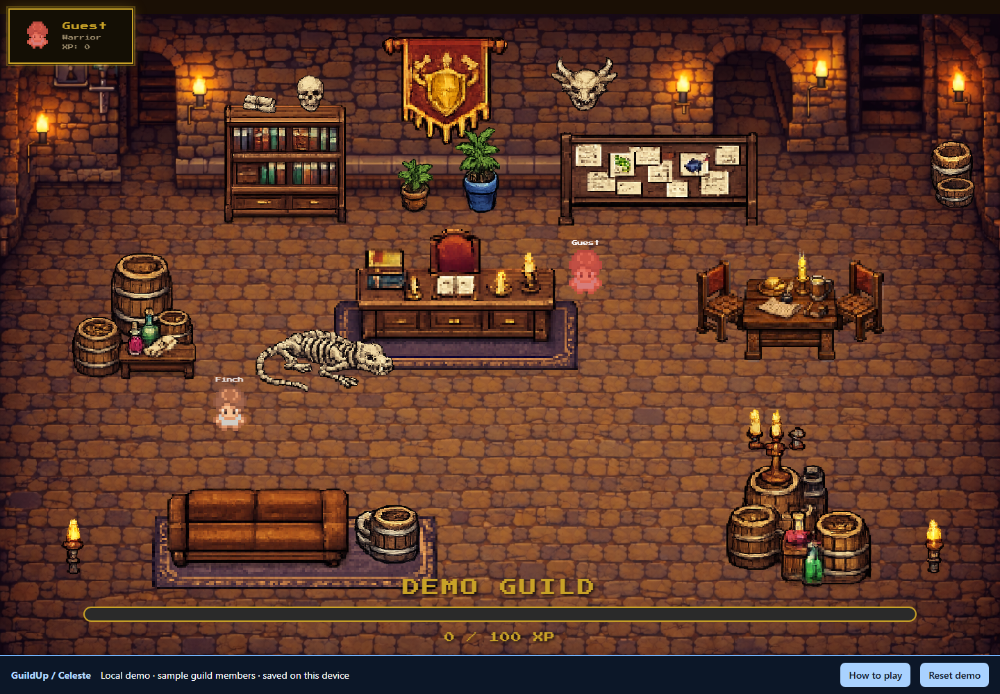

a to-do list, but make it a questGUILDUP!GuildUp!
Turn invisible coordination work into a shared guild adventure. Tasks, teamwork and a fairer share of the load.
My part Original concept & overall design, frontend interactions, assignment planner and AI backend.